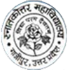

Student Helpline / Anti-Ragging : 0522-2732186
Student's can meet the Hon'ble Vice Chancellor on every Monday, Wednesday and Friday between 4 PM to 5 PM

Hon’ble Chancellor &
H.E. Governor of U.P.

Hon’ble. Chief Minister
Government of U.P.

Vice Chancellor
APJAKTU
Students seeking a Bachelors degree can choose from our Programmes like B. Pharma, B. Tech, BHMCT, B.Arch, BFAD etc.
Students seeking a Masters degree can choose from our Programmes like MBA, MCA, M.Tech, M.Pharm etc.
Students seeking a Doctoral degree (Ph.D.) can seek admission in the field in which he/she has passed his/her qualifying examination